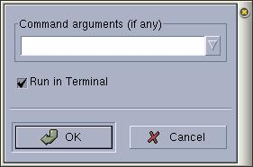

Anjuta Manual version 0.1Copyright (c) Kh. Naba Kumar Singh |
| Contents(Top) | Index | Shortcuts |
| PREV: Compiling and Building programs | UP: contents | NEXT: Setting compiler options |
If you want to pass any argument(s) to your program, activate Build/program param.. and enter the arguments in the dialog box that will appear (shown below) and click Ok. You can also specify if the program should be run in terminal or not.
